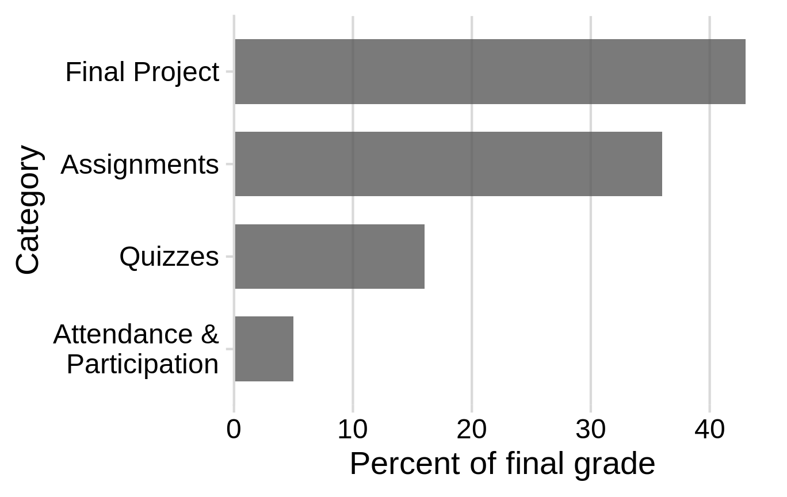

Syllabus
1 Course Information
| Instructor | Course |
|---|---|
| John Paul Helveston | Wednesdays |
| Science & Engineering Hall, Office 2830 | District House B205 |
| +1 (202) 994-7173 | January 13 - April 27, 2020 |
| jpg@gwu.edu | 12:45 - 3:15 PM |
| @JohnHelveston | Slack |
2 Course Description
2.1 Official GW Bulletin Description
Introduction to exploratory data analysis using the R programming language; data visualization, data cleaning, exploratory analysis, information communication, rmarkdown, reproducibility.
2.2 Unofficial Description
This course provides students with a foundation in exploring data using the R programming language. Students will learn how to source, manage, transform, and explore a wide variety of data types. Students will also master the fundamental concepts for visualizing and communicating information contained in raw data, including the human psychology of visual information processing. All analyses will be conducted to support reproducibility from raw data to results using RMarkdown. Teaching will involve interactive lectures with plenty of class time spent working on examples and coding. Students will be assessed through quizzes and exams. Throughout the semester, students will work on a research project of their own design to demonstrate mastery of the course’s topics. At the end of the semester, students will submit a final, reproducible report of their project and will give a 5-minute presentation of their findings.
2.3 Prerequisites
Students should have taken Programming for Analytics or have experience with at least one programming language. If you’re not sure whether you have the necessary prerequisite skills, you can try and get up to speed by completing Assignment 0 before classes start. Once classes start, it may be difficult to keep up without this background, and it may be more beneficial to wait and take this course next year after taking Programming for Analytics in the coming Fall.
3 Learning Objectives
Having successfully completed this course, students will be able to:
- Import, manipulate, visualize, and export data in R.
- Conduct a systematic exploratory data analysis (EDA) of different types of data.
- Apply fundamental principles of visualizing information for exploratory analysis and communication.
- Wrangle data from its original format into a fit-for-purpose format.
- Get data off the web and expose data, code, results on the web.
- Generate fully reproducible reports that contain code, equations, visualizations, and narrative text.
4 Pep Talk!
Learning a programming language can be as challenging as learning a new spoken language. Hadley Wickham - the chief data scientist at RStudio, and author of many amazing R packages you’ll be using - made this wise observation:
It’s easy when you start out programming to get really frustrated and think, “Oh it’s me, I’m really stupid,” or, “I’m not made out to program.” But, that is absolutely not the case. Everyone gets frustrated. I still get frustrated occasionally when writing R code. It’s just a natural part of programming. So, it happens to everyone and gets less and less over time. Don’t blame yourself. Just take a break, do something fun, and then come back and try again later.
If you’re finding yourself taking way too long hitting your head against a wall and not understanding, take a break, talk to classmates, ask questions in Slack, e-mail me, etc.
I promise, you can do this.
5 Required Texts & Materials
All texts and software for this course is freely available on the web. This includes:
5.1 Software
- R (version 3.6.0 or later), which can be downloaded from The Comprehensive R Archive Network (CRAN)
- RStudio (Desktop Version), a free IDE for R, which can be downloaded from RStudio
5.2 Texts / Other Useful Resources
- Healy, Kieran. “Data Visualization: A practical introduction” [free online], [buy on amazon]
- Grolemund, Garrett and Wickham, Hadley. “R for Data Science” [free online], [buy on amazon]
- Wilke, Claus O. “Fundamentals of Data Visualization” [free online], [buy on amazon]
6 Assignments
6.1 Class Participation
Regular class attendance is essential. Much of the class time will be spent doing exercises and coding. Multiple absences, inappropriate or unprofessional behavior during class (such as monopolizing discussions or being rude or disruptive), not participating in classroom exercises, and not being prepared for class will result in a lower grade for the class participation component. As a rule of thumb, the participation grade will be assigned according to the following rubric:
| Score | Attendance | Classroom |
|---|---|---|
| Low | Frequently absent | Rude; disruptive; distracting; monopolizes discussions |
| Moderate | Attended most classes, but often arrived late or left early | Takes notes; attentive; occasionally contributes in class discussion / exercises |
| High | Attends on time and prepared | Takes notes; attentive; regularly contributes in class discussion / exercises; does not dominate conversation; listens and responds thoughtfully to comments made by others |
6.2 Quizzes
There will be several quizzes given about once every two weeks immediately at the beginning of class. Quizzes cover material presented in previous classes and assignments during the weeks since the most-recent quiz. Quizzes are designed to be time-intensive, to test for fluency, and to demonstrate where additional study is needed. Quizzes are low-stakes - your worst one is dropped, and the rest count for just 15% of your final grade. If you do poorly on one, use that as feedback on where you need additional improvement.
Why quiz at all? Research shows that giving small quizzes throughout a class can dramatically help with retention. It’s a phenomenon known as the “retrieval effect” - basically, you have to practice remembering things, otherwise your brain won’t remember them. The phenomenon and research on it is explained in detail in the book “Make It Stick: The Science of Successful Learning”, by Brown, Roediger, and McDaniel.
6.3 Assignments
Assignments will be a combination of “exercises” and “redesign” projects. Exercises include instructional videos and applied practice writing code, mostly using the DataCamp platform. These are designed to be completed prior to the associated lectures to prepare for class. Redesign project assignments provide hands-on experience with the material covered in class by redesigning an existing data visualization. While students may work with their peers on these assignments, each student must submit their own work. Credit for each assignment will be allocated according to a rubric provided in the assignment description. No more than 2 late days can be used on any one assignment.
6.4 Final Project
Throughout the semester, students will work in teams of 1-3 students towards a final project of an exploratory data analysis. At the end of the semester, each student will submit a report of their analysis in the form of an html web page and give a 5-minute presentation of their results to the class. To make the overall project more manageable, it will be broken down into several separate “milestone” deliverables due throughout the semester, including a proposal, progress report, peer review, presentation, and final report. View the final project assignment page for more details.
There will be no final exam - the final project is the final exam
7 Grading
7.1 Standard Grading
Final grades will be calculated as follows:
| Item | Weight | Notes |
|---|---|---|
| Attendance & Participation | 5 % | |
| Quizzes | 16 % | Lowest quiz grade is dropped |
| Assignment 1 | 4 % | Exercises |
| Assignment 2 | 4 % | Exercises |
| Assignment 3 | 4 % | Exercises |
| Assignment 4 | 8 % | Redesign project |
| Assignment 5 | 4 % | Exercises |
| Assignment 6 | 8 % | Redesign project |
| Assignment 7 | 4 % | Exercises |
| Final Project Proposal | 6 % | |
| Final Project Progress Report | 8 % | |
| Final Project Peer Review | 5 % | |
| Final Project Presentation | 8 % | |
| Final Project Report | 16 % |
Here’s a visual breakdown by category:

7.2 AMD Grading
This Alternative Minimum Grading (AMG) policy is available to everybody, but is designed specifically for students who struggle in the first part of the course, and then through sustained hard work and dedication manage to elevate their performance in the latter part of the course to a level that merits passing with a C (even if their Standard Grade might be lower than that).
Student cannot “sign up” for AMG grading. Every student will be considered both for Standard Grading and AMG, and the instructor can choose to assign the AMG grade if a student’s effort merits it. To qualify for AMG you must put forth sustained effort, which means meeting the following requirements:
- You cannot miss multiple class periods
- You cannot miss multiple assignments or quizzes
- You cannot violate the Collaboration Policy
To compute your AMG score, first use the following to compute your raw score. If the resulting score is higher than a C, set it back to a C.
| Item | Weight |
|---|---|
| Assignments | 20% |
| Quizzes (Top 4) | 25% |
| Final Project | 55% |
7.3 Grading Scale
| Grade | Range | Grade | Range |
|---|---|---|---|
| A | 93 - 100% | C | 73 - 76.99% |
| A- | 90 - 92.99% | C- | 70 - 72.99% |
| B+ | 87 - 89.99% | D+ | 67 - 69.99% |
| B | 83 - 86.99% | D | 63 - 66.99% |
| B- | 80 - 82.99% | D- | 60 - 62.99% |
| C+ | 77 - 79.99% | F | < 60% |
The course instructors may choose to change the scales at their discretion. You are guaranteed that your letter grade will never become worse as a result of changing scales.
8 Getting Help
This class can be challenging - don’t suffer in silence. Look at the “Getting Help” page for ways to get resources that can help you succeed.
9 Course Policies
9.1 tl;dr
- BE NICE. BE HONEST. DON’T CHEAT.
- You get 5 late days - use them however you want, but you can’t use more than 2 late days on any one assignment.
- If you talk with me, I will listen and believe you.
9.2 Late Policy
Each students is allowed 5 late homework submission days - use them however you want, no questions asked. No more than 2 days can be applied toward a single assignment. Late days are meant to cover illness, family emergencies, and religious holidays. Assignments submitted more than 2 days after the due date will not be graded. In extreme circumstances, contact the instructor.
9.3 Collaboration Policy
Learning how to program is like learning how to ride a bicycle - to get better, you must practice writing code yourself. Therefore, we have a set of strict rules regarding what kind of collaboration is allowed, what counts as over-collaboration, and what counts as cheating.
9.3.1 Good Collaboration
- Discussing which general concepts might be useful in solving a problem (conditionals, loops, etc.).
- Asking for debugging help with code.
- Sketch out algorithms on a whiteboard together.
- To avoid copying the code, you should write up the solution together, discuss it, then erase the solution, wait a few minutes, and write up solutions individually.
- Help each other debug specific parts of assignment code.
- General discussion of course concepts.
- Detailed explanations of example code on the course website.
- Collaboratively solving a practice problem, with any level of co-writing code and co-debugging.
9.3.2 Over-collaboration
Over-collaboration results in a warning on the first offense, and a penalty on later offenses. Examples include:
- Explaining to a friend how to solve a problem in high-level terms by going through your own program line-by-line.
- Helping a friend debug code by suggesting they use your own approach to the problem.
- Collaborating with a student on an assignment and then not including their name as a collaborator in the assignment writeup.
- In the case that you have taken this course before, copying your own code from the previous time you took the course.
9.3.3 Cheating
Cheating results in a penalty on the first offense, and failing the course on the second offense. Cheating on assignments can include:
- Copying or stealing any amount of code from someone currently in the class or someone who has taken the class before.
- NOTE: Copying is never okay, whether the code is provided electronically, visually, audibly, or on paper.
- Providing code you have written for an assignment to anyone else in the class.
- Finding code online and using it in the assignment. One exception: you may use code from the course website.
- Putting code solutions from the course assignments online.
- Receiving code-level assistance from any person not associated with the course.
- Getting someone else to write the assignment code for you.
- Asking questions about the assignments on any online services outside of the course office hours / Slack.
Cheating on quizzes, assignments, or the final project can include:
- Referring to any external resources while completing the assignment (phones, notes, etc.).
- Copying part of an answer off of another student’s paper, even if it is very small.
- Using solutions provided by students who previously took the course.
9.3.4 Penalties
Penalties are decided by the course instructors, and can vary based on the severity of the offense. Possible penalties include:
- Receiving a 0 on the assignment/quiz in question.
- Receiving a -100 on the assignment/quiz in question.
- Receiving a full letter grade deduction in the course.
- Automatically failing the course.
Penalties may also be accompanied by a letter to the Dean of Student Affairs, again at the instructors’ discretion. This can lead to university-level penalties, such as being suspended or expelled.
9.3.5 Plagiarism Detection
Programs are naturally structured, which makes them very easy to compare for plagiarism. Automated plagiarism detection systems make this process even easier. Watch this video showing plagiarism detection software in action (this example is using Python code, but this also works for R code).
In short, if you copy code, we will know - don’t copy code!
9.3.6 Grace Period
Your first year of college is a time when you do a lot of learning. Sometimes, you might make bad decisions or mistakes. The most important thing for you to do is to learn from your mistakes, to constantly grow, and become a better person.
Sometimes, students panic and copy code right before the deadline, then regret what they did afterwards. Therefore, you may rescind any homework submission for up to 24 hours after the deadline with no questions asked. Simply email the course instructors asking to delete the submission in question, and we will do so. Deleted submissions will not be considered during plagiarism detection, though of course they will also not be graded. However, it will always be better to get a 0 (or partial credit) on an assignment than to get a cheating violation!
9.4 Children in class
I applaud all of you who go to graduate school with children! It is difficult to balance academic, work, and family commitments, and I want you to succeed. Here are my policies regarding children in class:
- All breastfeeding babies are welcome in class as often as necessary.
- Non-nursing babies and older children are welcome whenever alternate arrangements cannot be made. As a parent of young children, I understand that babysitters fall through, partners have conflicting schedules, children get sick, and other issues arise that leave parents with few other options.
- In cases where children come to class, I invite parents/caregivers to sit close to the door so as to more easily excuse yourself to attend to your child’s needs. Non-parents in the class: please reserve seats near the door for your parenting classmates.
- All students are expected to join with me in creating a welcoming environment that is respectful of your classmates who bring children to class.
I understand that sleep deprivation and exhaustion are among the most difficult aspects of parenting young children. The struggle of balancing school, work, childcare, and graduate school is tiring, and I will do my best to accommodate any such issues while maintaining the same high expectations for all students enrolled in the class. Please do not hesitate to contact me with any questions or concerns.
9.5 Lauren’s Promise
I will listen and believe you if someone is threatening you.
Lauren McCluskey, a 21-year-old honors student athlete, was murdered on October 22, 2018 by a man she briefly dated on the University of Utah campus. We must all take action to ensure that this never happens again.
If you are in immediate danger, call 911 or GWU police at 202-994-6111 (GWPD).
If you are experiencing sexual assault, domestic violence, or stalking, if you report it to me I will listen and connect you to resources or call GWU’s Counseling and Psychological Services (202-994-5300).
Any form of sexual harassment or violence will not be excused or tolerated at GWU. GWU has instituted procedures to respond to violations of these laws and standards, programs aimed at the prevention of such conduct, and intervention on behalf of the victims. GWU Police officers will treat victims of sexual assault, domestic violence, and stalking with respect and dignity. Advocates on campus and in the community can help with victims’ physical and emotional health, reporting options, and academic concerns.
9.6 Use of Course Materials
All course materials available on the course website are developed open source - you are welcome to post and share them following the licensing guidelines listed in the license page.
However, all solutions to assignments and quizzes are proprietary. Don’t post them online or try to sell them - this is a violation of the student code of conduct.
9.7 What To Do if the Instructor Does Not Arrive
Wait 20 minutes, after that you’re free to leave. One member of the class should be selected to notify the EMSE Department of the Instructor’s absence by calling the EMSE Department 202-994-4892 on next business day.
10 University Policies
10.1 University Policy on Religious Holidays
In accordance with University Policy, students should notify faculty during the first week of the semester of their intention to be absent from class on their day(s) of religious observance. Official university policy here: https://students.gwu.edu/accommodations-religious-holidays
- Students should notify faculty during the first week of the semester of their intention to be absent from class on their day(s) of religious observance.
- Faculty should extend to these students the courtesy of absence without penalty on such occasions, including permission to make up examinations.
- Faculty who intend to observe a religious holiday should arrange at the beginning of the semester to reschedule missed classes or to make other provisions for their course-related activities.
10.2 Support for Students Outside the Classroom
Disability Support Services (DSS): Any student who may need an accommodation based on the potential impact of a disability should contact the Disability Support Services office at 202-994-8250 in the Rome Hall, Suite 102, to establish eligibility and to coordinate reasonable accommodations. For additional information please refer to: https://disabilitysupport.gwu.edu/
Mental Health Services (202-994-5300): The University’s Mental Health Services offers 24/7 assistance and referral to address students’ personal, social, career, and study skills problems. Services for students include: crisis and emergency mental health consultations confidential assessment, counseling services (individual and small group), and referrals. https://healthcenter.gwu.edu/counseling-and-psychological-services
10.3 Academic Integrity Code
Academic dishonesty is defined as cheating of any kind, including misrepresenting one’s own work, taking credit for the work of others without crediting them and without appropriate authorization, and the fabrication of information. For the remainder of the code, see: https://studentconduct.gwu.edu/code-academic-integrity
In addition to the formal code of academic integrity, the instructor expects that students will treat this course with the level of professionalism required in the workplace. Remember that real firms are sponsoring student projects throughout the semester; in a workplace setting, these firms would be paying clients for the analyses being conducted. This course prepares students to succeed in the workplace, and maintaining a high degree of professionalism is expected.
11 Super Heros

Once you have read this entire syllabus and viewed the course schedule, please send me a picture of your favorite super hero in a direct message on Slack.
For real.
Brownie points if it’s animated.
Page sources:
Some content on this page is inspired by and / or modified from other sources:
- The “Pep Talk” and “Super Heros” sections are inspired by Andrew Heiss’s course Program Evaluation For Public Service
- The collaboration policy is mostly copied from the course 15-112 at Carnegie Mellon University
George Washington University | School of Engineering & Applied Science
Dr. John Paul Helveston | jph@gwu.edu | Wednesdays | 12:45–3:15 PM | District House B205 | |
This work is licensed under a Creative Commons ShareAlike 4.0 International License.
See the licensing page for more details about copyright information.
Content 2020 John Paul Helveston